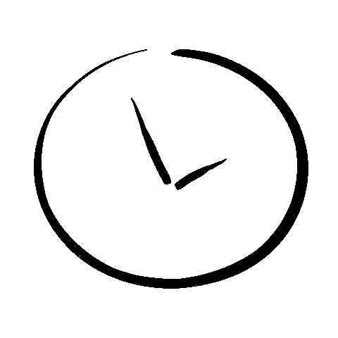
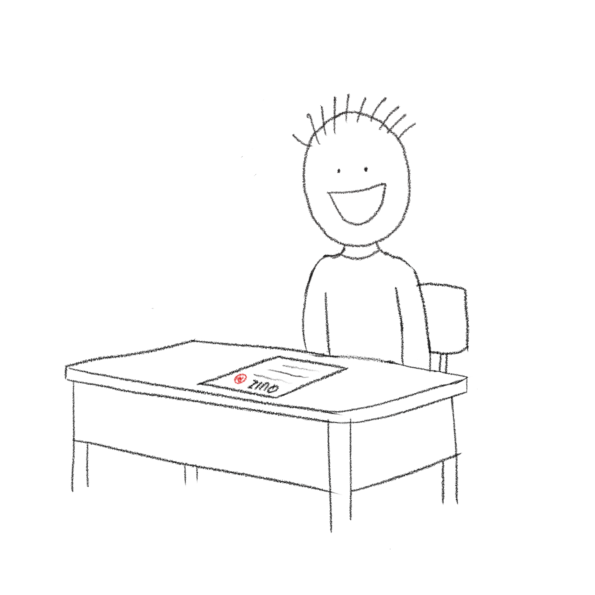

Test of God
Click anywhere to enter

Why is this test so hard!! I have no clue how to do these. I am for sure failing on this.
My Mom's gonna kill me if I fail this one. Please God help me this time, I'll never cheat again!!!
77
+ 33
Click on the box above and press enter after giving an answer
77
+ 33
Phew. I guess I won't fail this test after all.
A few days later...

Thank you God! I will never cheat again.
The End